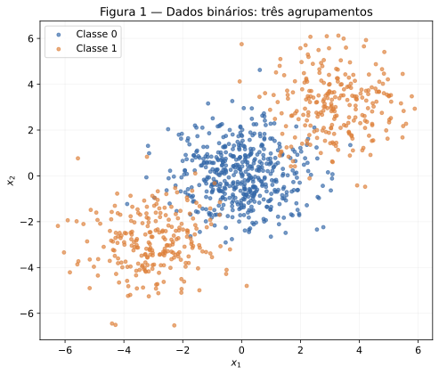
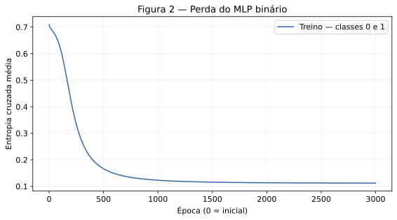
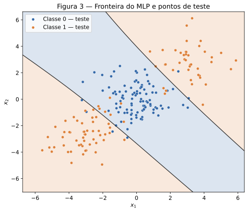
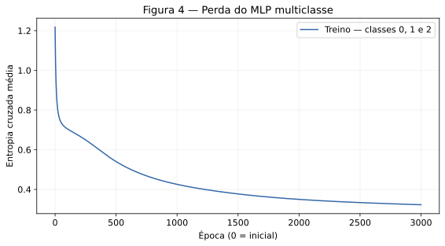
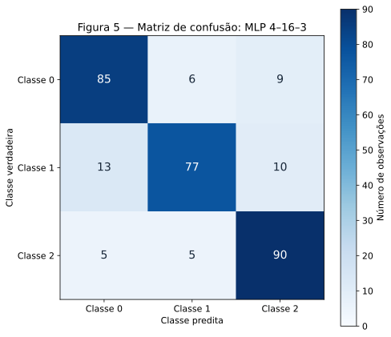
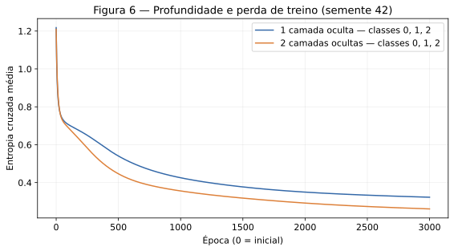

MLP — Multi-Layer Perceptrons
Gabriel Gerner Maggion · Insper · Artificial Neural Networks and Deep Learning · 2026.2
Data: 13 de outubro de 2026.
O objetivo é entender como a camada oculta modifica as regiões de decisão e verificar o efeito de aumentar a profundidade. As redes foram implementadas em NumPy, incluindo ativações, perdas, propagação, gradientes e atualização. Os números abaixo são resultados das execuções, sem selecionar sementes pelo desempenho no teste.
Fontes: enunciado da atividade e formato de entrega, consultados em 13/10/2026. Uso de IA: OpenAI ChatGPT/Codex participou da resolução, código, verificações, figuras, redação e publicação, conforme declarado no campo ai_use.
Reprodução: na raiz do repositório, executar:
python -m pip install -r docs/exercises/mlp/code/requirements.txt
python docs/exercises/mlp/code/mlp.py
O script recria as seis figuras, os resultados numéricos e a comparação das sementes. Ambiente usado: Python 3.12.14, NumPy 2.3.5, pandas 2.2.3, Matplotlib 3.10.8 e scikit-learn 1.8.0. Existe um único gerador rng = np.random.default_rng(42). Nas repetições pareadas do Exercício 4, seu estado é reiniciado com 42, 43 e 44; os dados e sua divisão permanecem fixos em 42. O mesmo objeto rng é passado a todas as redes.
Exercise 1
A — Forward pass
Neste exercício, cada linha de \(W^{(1)}\) corresponde a um neurônio oculto. Com \(x=[0.5,-0.2]^T\) e \(y=1\), as pré-ativações são:
Aplicando \(\tanh\):
Na saída:
Como existe uma única observação, não há fator adicional de média:
B — Backward pass
A regra da cadeia começa na perda. Não se usa o fator \(1/2\), pois ele não aparece no enunciado:
A derivada da ativação de saída é:
Logo, o delta da saída é:
Pesos e viés da saída. Como \(u^{(2)}=W^{(2)}h+b^{(2)}\):
Gradientes que chegam às ativações ocultas. São usados os pesos antigos, antes de qualquer atualização:
As derivadas das ativações ocultas são:
Portanto:
Pesos e vieses ocultos. Para cada peso, \(\partial L/\partial W_{ij}^{(1)}=\delta_i^{(1)}x_j\):
C — Parameter update
Cada parâmetro recebe \(\theta_{\mathrm{novo}}=\theta_{\mathrm{antigo}}-0.3\,\partial L/\partial\theta\). A tabela mostra todas as substituições. O texto do enunciado menciona oito parâmetros, mas os valores fornecidos contêm nove escalares: quatro pesos ocultos, dois vieses ocultos, dois pesos de saída e um viés de saída.
| Parâmetro | Atualização com \(\eta=0.3\) | Valor novo |
|---|---|---|
| \(W_{11}^{(1)}\) | \(0.30000000-0.3(-0.25468488)\) | 0.37640546 |
| \(W_{12}^{(1)}\) | \(-0.10000000-0.3(0.10187395)\) | -0.13056219 |
| \(W_{21}^{(1)}\) | \(0.20000000-0.3(0.15901618)\) | 0.15229515 |
| \(W_{22}^{(1)}\) | \(0.40000000-0.3(-0.06360647)\) | 0.41908194 |
| \(b_1^{(1)}\) | \(0.10000000-0.3(-0.50936975)\) | 0.25281093 |
| \(b_2^{(1)}\) | \(-0.20000000-0.3(0.31803236)\) | -0.29540971 |
| \(W_1^{(2)}\) | \(0.50000000-0.3(-0.28862383)\) | 0.58658715 |
| \(W_2^{(2)}\) | \(-0.30000000-0.3(0.19496791)\) | -0.35849037 |
| \(b^{(2)}\) | \(0.20000000-0.3(-1.09482791)\) | 0.52844837 |
Repetindo o cálculo com esses parâmetros:
A perda cai de 0.40037691 para 0.08341669 e a previsão se aproxima do alvo 1. O negativo do gradiente aponta a direção de redução local da perda; neste caso o passo de 0.3 efetivamente reduz o erro. Isso foi confirmado pela segunda propagação, pois uma taxa excessiva não garantiria redução em uma rede não linear. Os cálculos usam precisão completa; o arredondamento ocorre apenas na apresentação.
Exercise 2
A — Generate the data
Foram gerados 1.000 pontos com make_blobs: 500 ao redor de \((0,0)\), 250 ao redor de \((3,3)\) e 250 ao redor de \((-3,-3)\), com desvio 1.2 e random_state=42. A classe 0 é o agrupamento central e a classe 1 reúne os dois extremos. A divisão estratificada 80/20 produz 800 observações de treino (400 por classe) e 200 de teste (100 por classe).
A Figura 1 mostra todos os pontos em suas coordenadas originais. Para treinar os modelos, cada atributo é padronizado por \(\tilde x_j=(x_j-\mu_j)/s_j\). A média e o desvio são calculados somente no treino e depois aplicados ao teste e à grade de decisão.

B — Establish the baseline
A regressão logística utiliza os mesmos dados padronizados de treino, configuração padrão de regularização, max_iter=2000 e random_state=42. Sua acurácia no teste foi 47,50% (95/200). Trata-se do baseline linear permitido pelo enunciado, não da implementação da MLP.
C — Implement the MLP
A arquitetura escolhida foi 2 → 8 → 1, com 33 parâmetros, tanh na camada oculta e sigmoide na saída. Foram realizadas 3.000 épocas, taxa 0.1, gradiente descendente com todas as 800 observações em cada atualização, inicialização Xavier uniforme e vieses inicialmente iguais a zero. Não foram usados momentum, regularização, dropout ou parada antecipada.
A acurácia no teste foi 92,00% (184/200). A entropia cruzada binária média caiu de 0.70951841 para 0.11215330 no treino. O limiar de classificação é 0.5.
Equações implementadas. No código, as observações ocupam as linhas; por isso \(W\) tem formato entrada × saída, transposto em relação à convenção do Exercício 1. Para um lote de \(N\) exemplos:
Na saída binária, \(P=\sigma(Z^{(L)})\) e:
A regra da cadeia dá:
Para qualquer camada, inclusive com várias camadas ocultas:
A atualização é \(W\leftarrow W-\eta\,\partial\mathcal L/\partial W\) e \(b\leftarrow b-\eta\,\partial\mathcal L/\partial b\). Todos os gradientes são calculados antes de modificar os parâmetros. Para evitar problemas numéricos, a BCE é avaliada diretamente dos logits com logaddexp, sem alterar a fórmula de seu gradiente.


As regiões coloridas representam a classe prevista; os pontos representam as classes verdadeiras do teste. A linha escura marca a probabilidade 0.5. A época 0 das curvas representa o modelo antes do treinamento, seguida pelas 3.000 atualizações.
Código executável e comentado — implementação única dos Exercícios 2, 3 e 4. Baixar mlp.py. O arquivo abaixo é incluído diretamente do código versionado. Os métodos forward, backward e update não são redefinidos entre os exercícios.
"""MLP do zero: execute este arquivo para reproduzir resultados e Figuras 1–6.
O scikit-learn só gera/separa dados, calcula a matriz de confusão e fornece
as regressões logísticas de referência expressamente permitidas no enunciado.
Forward, perdas, backpropagation e gradiente descendente usam somente NumPy.
"""
from pathlib import Path
import json
import platform
import numpy as np
import pandas as pd
import matplotlib
matplotlib.use("Agg")
import matplotlib.pyplot as plt
from matplotlib.colors import ListedColormap
from sklearn.datasets import make_blobs, make_classification
from sklearn.model_selection import train_test_split
from sklearn.linear_model import LogisticRegression
from sklearn.metrics import confusion_matrix
import sklearn
ROOT = Path(__file__).resolve().parent.parent
FIGURES = ROOT / "figures"
rng = np.random.default_rng(42) # Único Generator, passado a todas as redes.
COLORS = ["#3368a8", "#dd8039", "#5c9983"]
class MLP:
"""Qualquer sequência de camadas; tanh nas ocultas e saída configurável."""
def __init__(self, layer_sizes, rng, output="binary"):
self.layer_sizes = list(layer_sizes)
self.output = output
if output not in ("binary", "multiclass"):
raise ValueError("Saída deve ser binary ou multiclass.")
if output == "binary" and layer_sizes[-1] != 1:
raise ValueError("Classificação binária requer uma saída.")
self.weights, self.biases = [], []
for fan_in, fan_out in zip(layer_sizes[:-1], layer_sizes[1:]):
# Xavier uniforme: escala adequada à tanh; vieses inicialmente zero.
limit = np.sqrt(6.0 / (fan_in + fan_out))
self.weights.append(rng.uniform(-limit, limit, (fan_in, fan_out)))
self.biases.append(np.zeros((1, fan_out)))
@staticmethod
def sigmoid(z):
# Formulação estável sem overflow, inclusive para logits extremos.
result = np.empty_like(z)
positive = z >= 0
result[positive] = 1.0 / (1.0 + np.exp(-z[positive]))
exp_z = np.exp(z[~positive])
result[~positive] = exp_z / (1.0 + exp_z)
return result
def forward(self, X):
activations = [X]
for W, b in zip(self.weights[:-1], self.biases[:-1]):
activations.append(np.tanh(activations[-1] @ W + b))
logits = activations[-1] @ self.weights[-1] + self.biases[-1]
if self.output == "binary":
probabilities = self.sigmoid(logits)
else:
shifted = logits - logits.max(axis=1, keepdims=True)
exp_z = np.exp(shifted)
probabilities = exp_z / exp_z.sum(axis=1, keepdims=True)
activations.append(probabilities)
return probabilities, (activations, logits)
def targets(self, y):
if self.output == "binary":
return y.reshape(-1, 1).astype(float)
return np.eye(self.layer_sizes[-1])[y.astype(int)]
def loss(self, logits, Y):
if self.output == "binary":
# BCE = log(1 + exp(z)) - y*z, calculada de modo estável.
return float(np.mean(np.logaddexp(0.0, logits) - Y * logits))
shifted = logits - logits.max(axis=1, keepdims=True)
log_probs = shifted - np.log(np.exp(shifted).sum(axis=1, keepdims=True))
return float(-np.mean(np.sum(Y * log_probs, axis=1)))
def backward(self, cache, Y):
activations, _ = cache
# Sigmoid+BCE e softmax+CCE possuem o mesmo delta: (P-Y)/N.
delta = (activations[-1] - Y) / len(Y)
dW, db = [None] * len(self.weights), [None] * len(self.biases)
for layer in range(len(self.weights) - 1, -1, -1):
dW[layer] = activations[layer].T @ delta
db[layer] = delta.sum(axis=0, keepdims=True)
if layer > 0:
delta = (delta @ self.weights[layer].T) * (1.0 - activations[layer] ** 2)
return dW, db
def update(self, gradients, learning_rate):
dW, db = gradients
# Todos os gradientes já foram calculados com os parâmetros antigos.
for layer in range(len(self.weights)):
self.weights[layer] -= learning_rate * dW[layer]
self.biases[layer] -= learning_rate * db[layer]
def fit(self, X, y, learning_rate, epochs):
Y = self.targets(y)
_, cache = self.forward(X)
history = [self.loss(cache[1], Y)] # Época zero: antes das atualizações.
for _ in range(epochs):
self.update(self.backward(cache, Y), learning_rate)
_, cache = self.forward(X)
history.append(self.loss(cache[1], Y))
return np.asarray(history)
def predict(self, X):
probabilities, _ = self.forward(X)
if self.output == "binary":
return (probabilities[:, 0] >= 0.5).astype(int)
return probabilities.argmax(axis=1)
@property
def parameter_count(self):
return sum(W.size + b.size for W, b in zip(self.weights, self.biases))
def reset_seed(seed):
"""Reinicia o MESMO rng apenas para as repetições pareadas exigidas."""
rng.bit_generator.state = np.random.PCG64(seed).state
def standardize_train_test(X_train, X_test):
"""Estima média/desvio exclusivamente no treino, sem vazamento do teste."""
mean, std = X_train.mean(axis=0), X_train.std(axis=0)
std = np.where(std == 0, 1.0, std)
return (X_train - mean) / std, (X_test - mean) / std, mean, std
def accuracy(y_true, y_pred):
return float(np.mean(y_true == y_pred))
def save_figure(fig, number):
fig.tight_layout()
fig.savefig(FIGURES / f"fig{number}.svg", bbox_inches="tight", metadata={"Date": None})
plt.close(fig)
def loss_figure(history, number, title, classes):
fig, ax = plt.subplots(figsize=(8, 4.5))
ax.plot(np.arange(len(history)), history, color=COLORS[0], label=f"Treino — classes {classes}")
ax.set(title=f"Figura {number} — {title}", xlabel="Época (0 = inicial)", ylabel="Entropia cruzada média")
ax.legend()
ax.grid(alpha=.2)
save_figure(fig, number)
def check_gradients():
"""Diferenças centrais verificam todas as entradas em três redes pequenas."""
saved_state = rng.bit_generator.state
X = np.array([[.2, -.4], [.7, .3], [-.5, .8]])
checks = []
for sizes, output, y in [([2, 3, 1], "binary", np.array([0, 1, 0])),
([2, 3, 3], "multiclass", np.array([0, 1, 2])),
([2, 3, 2, 3], "multiclass", np.array([0, 1, 2]))]:
model = MLP(sizes, rng, output)
Y = model.targets(y)
_, cache = model.forward(X)
dW, db = model.backward(cache, Y)
max_error = 0.0
for parameter, gradient in zip(model.weights + model.biases, dW + db):
for index in np.ndindex(parameter.shape):
original, epsilon = parameter[index], 1e-6
parameter[index] = original + epsilon
positive = model.loss(model.forward(X)[1][1], Y)
parameter[index] = original - epsilon
negative = model.loss(model.forward(X)[1][1], Y)
parameter[index] = original
numerical = (positive - negative) / (2 * epsilon)
max_error = max(max_error, abs(numerical - gradient[index]))
assert max_error < 1e-7, (sizes, max_error)
checks.append({"architecture": sizes, "max_absolute_error": max_error})
rng.bit_generator.state = saved_state
return checks
def main():
reset_seed(42)
FIGURES.mkdir(parents=True, exist_ok=True)
plt.rcParams.update({"font.size": 11, "svg.fonttype": "none", "svg.hashsalt": "mlp42"})
results = {"versions": {"python": platform.python_version(), "numpy": np.__version__,
"pandas": pd.__version__, "matplotlib": matplotlib.__version__,
"scikit-learn": sklearn.__version__}, "gradient_checks": check_gradients()}
# Exercício 2: gerador e divisão exatamente como no enunciado.
centers = np.array([[0., 0.], [3., 3.], [-3., -3.]])
X, c = make_blobs(n_samples=[500, 250, 250], centers=centers,
cluster_std=1.2, random_state=42)
y = (c > 0).astype(int)
Xtr, Xte, ytr, yte = train_test_split(X, y, test_size=.2, random_state=42, stratify=y)
Xtrs, Xtes, mean2, std2 = standardize_train_test(Xtr, Xte)
fig, ax = plt.subplots(figsize=(7, 6))
for cls in (0, 1):
ax.scatter(X[y == cls, 0], X[y == cls, 1], s=15, alpha=.65, color=COLORS[cls], label=f"Classe {cls}")
ax.set(title="Figura 1 — Dados binários: três agrupamentos", xlabel="$x_1$", ylabel="$x_2$")
ax.legend()
ax.grid(alpha=.15)
save_figure(fig, 1)
baseline2 = LogisticRegression(max_iter=2000, random_state=42).fit(Xtrs, ytr)
model2 = MLP([2, 8, 1], rng, "binary")
history2 = model2.fit(Xtrs, ytr, learning_rate=.1, epochs=3000)
pred2 = model2.predict(Xtes)
results["exercise2"] = {"architecture": model2.layer_sizes, "learning_rate": .1, "epochs": 3000,
"parameters": model2.parameter_count, "baseline_accuracy": accuracy(yte, baseline2.predict(Xtes)),
"test_accuracy": accuracy(yte, pred2), "correct": int((yte == pred2).sum()),
"initial_loss": float(history2[0]), "final_loss": float(history2[-1]),
"train_class_counts": np.bincount(ytr).tolist(), "test_class_counts": np.bincount(yte).tolist()}
loss_figure(history2, 2, "Perda do MLP binário", "0 e 1")
gx = np.linspace(X[:, 0].min() - .5, X[:, 0].max() + .5, 320)
gy = np.linspace(X[:, 1].min() - .5, X[:, 1].max() + .5, 320)
xx, yy = np.meshgrid(gx, gy)
grid = (np.c_[xx.ravel(), yy.ravel()] - mean2) / std2
probabilities, _ = model2.forward(grid)
zz = probabilities.reshape(xx.shape)
fig, ax = plt.subplots(figsize=(7, 6))
ax.contourf(xx, yy, zz >= .5, levels=[-.5, .5, 1.5], cmap=ListedColormap(COLORS[:2]), alpha=.17)
ax.contour(xx, yy, zz, levels=[.5], colors="#303030", linewidths=1.3)
for cls in (0, 1):
ax.scatter(Xte[yte == cls, 0], Xte[yte == cls, 1], color=COLORS[cls], s=28,
edgecolors="white", linewidths=.35, label=f"Classe {cls} — teste")
ax.set(title="Figura 3 — Fronteira do MLP e pontos de teste", xlabel="$x_1$", ylabel="$x_2$")
ax.legend()
save_figure(fig, 3)
# Exercícios 3 e 4: dados/split permanecem fixos nas três sementes de pesos.
X, y = make_classification(n_samples=1500, n_features=4, n_informative=4,
n_redundant=0, n_repeated=0, n_classes=3,
n_clusters_per_class=2, class_sep=1.0, random_state=42)
Xtr, Xte, ytr, yte = train_test_split(X, y, test_size=.2, random_state=42, stratify=y)
Xtrs, Xtes, _, _ = standardize_train_test(Xtr, Xte)
baseline3 = LogisticRegression(max_iter=2000, random_state=42).fit(Xtrs, ytr)
results["multiclass_data"] = {"train_class_counts": np.bincount(ytr).tolist(),
"test_class_counts": np.bincount(yte).tolist(),
"baseline_accuracy": accuracy(yte, baseline3.predict(Xtes))}
runs, histories, models = [], {}, {}
for seed in (42, 43, 44):
for exercise, sizes in [(3, [4, 16, 3]), (4, [4, 16, 16, 3])]:
reset_seed(seed)
model = MLP(sizes, rng, "multiclass")
history = model.fit(Xtrs, ytr, learning_rate=.1, epochs=3000)
pred = model.predict(Xtes)
row = {"exercise": exercise, "seed": seed, "architecture": sizes,
"parameters": model.parameter_count, "epochs": 3000, "learning_rate": .1,
"initial_loss": float(history[0]), "final_loss": float(history[-1]),
"train_accuracy": accuracy(ytr, model.predict(Xtrs)), "test_accuracy": accuracy(yte, pred),
"correct": int((pred == yte).sum())}
runs.append(row)
if seed == 42:
histories[exercise], models[exercise] = history, model
results[f"exercise{exercise}"] = row.copy()
cm = confusion_matrix(yte, models[3].predict(Xtes), labels=[0, 1, 2])
results["exercise3"]["confusion_matrix"] = cm.tolist()
pair_counts = [(int(cm[i, j] + cm[j, i]), i, j) for i in range(3) for j in range(i + 1, 3)]
largest, first, second = max(pair_counts)
results["exercise3"]["most_confused_pair"] = [first, second]
results["exercise3"]["pair_errors"] = largest
results["runs"] = runs
results["means"] = {}
for ex in (3, 4):
subset = [row for row in runs if row["exercise"] == ex]
results["means"][str(ex)] = {key: float(np.mean([row[key] for row in subset]))
for key in ("test_accuracy", "final_loss", "train_accuracy")}
results["means"][str(ex)]["test_std"] = float(np.std([row["test_accuracy"] for row in subset], ddof=1))
results["mean_accuracy_difference_pp"] = 100 * (results["means"]["4"]["test_accuracy"] - results["means"]["3"]["test_accuracy"])
loss_figure(histories[3], 4, "Perda do MLP multiclasse", "0, 1 e 2")
fig, ax = plt.subplots(figsize=(7, 6))
im = ax.imshow(cm, cmap="Blues", vmin=0)
for i in range(3):
for j in range(3):
ax.text(j, i, str(cm[i, j]), ha="center", va="center", fontsize=14,
color="white" if cm[i, j] > cm.max() / 2 else "#182739")
ax.set(xticks=range(3), yticks=range(3), xticklabels=["Classe 0", "Classe 1", "Classe 2"],
yticklabels=["Classe 0", "Classe 1", "Classe 2"], xlabel="Classe predita", ylabel="Classe verdadeira",
title="Figura 5 — Matriz de confusão: MLP 4–16–3")
fig.colorbar(im, ax=ax, label="Número de observações")
save_figure(fig, 5)
fig, ax = plt.subplots(figsize=(8, 4.5))
ax.plot(histories[3], color=COLORS[0], label="1 camada oculta — classes 0, 1, 2")
ax.plot(histories[4], color=COLORS[1], label="2 camadas ocultas — classes 0, 1, 2")
ax.set(title="Figura 6 — Profundidade e perda de treino (semente 42)", xlabel="Época (0 = inicial)", ylabel="Entropia cruzada média")
ax.legend()
ax.grid(alpha=.2)
save_figure(fig, 6)
(ROOT / "code" / "results.json").write_text(json.dumps(results, indent=2, ensure_ascii=False) + "\n", encoding="utf-8")
pd.DataFrame(runs).to_csv(ROOT / "code" / "seed_comparison.csv", index=False)
print(json.dumps(results, indent=2, ensure_ascii=False))
if __name__ == "__main__":
main()
A verificação por diferenças finitas centrais compara os gradientes analíticos de todos os parâmetros de três redes pequenas: binária, multiclasse e multiclasse com duas camadas ocultas. Os maiores erros absolutos foram, respectivamente, 7.95 × 10⁻¹¹, 1.27 × 10⁻¹⁰ e 1.08 × 10⁻¹⁰, abaixo da tolerância \(10^{-7}\). Essa conferência não participa da otimização e restaura o estado do gerador aleatório.
D — Analysis
A Figura 3 mostra a classe 1 em duas regiões externas, em lados opostos da faixa central atribuída à classe 0. Uma única reta divide o plano em dois semiplanos: não consegue colocar ambos os extremos na classe 1 e deixar o agrupamento central na classe 0. A camada oculta combina transformações não lineares e produz as duas transições necessárias.
Há aproximadamente uma simetria entre os dois agrupamentos da classe 1. Assim, a direção linear que ajuda a classificar um extremo tende a prejudicar o outro, e a regressão logística encontra pouco sinal linear aproveitável. O valor de 47,50% fica próximo dos 50% esperados de um palpite aleatório balanceado; estar ligeiramente abaixo de 50% nesta divisão é efeito da amostra e do ajuste, não uma lei segundo a qual todo classificador linear sempre teria desempenho inferior ao acaso.
A MLP alcançou 92,00%, ganho de 44,50 pontos percentuais, porque reconhece a estrutura dos dois extremos. Os 16 erros restantes são compatíveis com a sobreposição das distribuições; o desvio 1.2 não produz agrupamentos perfeitamente separados. A figura sugere essa explicação geométrica, mas não demonstra que a rede atingiu o menor erro possível.
Exercise 3
A — Generate the data
O make_classification utiliza 1.500 observações, quatro atributos informativos, zero redundantes, zero repetidos, três classes e dois agrupamentos por classe, class_sep=1.0 e random_state=42. A divisão estratificada com a mesma semente produz 1.200 observações de treino e 300 de teste. As contagens de treino são 399, 399 e 402; no teste há 100 de cada classe. Os atributos são novamente padronizados exclusivamente com estatísticas do treino.
B — Adapt the network
A saída passa a ter três neurônios. As ativações ocultas continuam usando tanh, enquanto a saída usa softmax e a perda passa a ser a entropia cruzada categórica. O construtor recebe output="multiclass"; o mesmo código de propagação, retropropagação e atualização é reutilizado integralmente.
Para uma observação, com logits \(u_j\), alvo one-hot \(y_j\) e probabilidades \(p_j\):
A derivada da softmax é:
Aplicando a regra da cadeia:
pois \(\sum_jy_j=1\). Para a média do lote, \(\partial\mathcal L/\partial U=(P-Y)/N\). Esse resultado é idêntico, em forma matricial, ao delta binário do Exercício 2; muda somente a dimensão. Os demais gradientes seguem as mesmas equações.
A softmax subtrai o maior logit de cada observação antes da exponenciação. A perda usa log-probabilidades calculadas por essa forma estável, evitando logaritmos de probabilidades arredondadas a zero.
C — Train and evaluate
A arquitetura é 4 → 16 → 3, uma camada oculta com 16 neurônios e 131 parâmetros:
Foram usadas 3.000 épocas, taxa 0.1, lote completo de 1.200 observações, Xavier uniforme, vieses zero e semente 42. Não houve seleção de hiperparâmetros com base no teste. A acurácia no teste foi 84,00% (252/300) e no treino 87,50%. A perda média de treino caiu de 1.21797293 para 0.32272105.


D — Analysis
O par mais confundido é classes 0 e 1, com 19 erros cruzados: seis observações da classe 0 classificadas como 1, e 13 da classe 1 classificadas como 0. Os pares 0–2 e 1–2 somam, respectivamente, 14 e 15 erros. No total ocorreram 48 erros entre 300 observações.
Cada classe reúne dois agrupamentos, portanto existe uma mistura de seis agrupamentos em quatro dimensões. Uma classe pode ocupar mais de uma região, e agrupamentos de classes diferentes podem se sobrepor ou exigir fronteiras distintas em diferentes partes do espaço. A MLP consegue combinar os quatro atributos para construir essas separações. A maior confusão entre 0 e 1 é consistente com regiões menos separáveis para essas classes, mas a matriz isoladamente não identifica quais agrupamentos se sobrepõem nem comprova a causa de cada erro.
O baseline de regressão logística no mesmo treino/teste obteve 66,33% (199/300), frente aos 84,00% da MLP: ganho de 17,67 pontos percentuais, ou 53 classificações corretas adicionais. A camada oculta acrescentou fronteiras não lineares e interações entre atributos, enquanto a regressão logística utiliza escores lineares e fronteiras lineares entre pares de classes.
Exercise 4
A — Train the deeper network
Foi adicionada uma segunda camada oculta com a mesma largura: 4 → 16 → 16 → 3, com 403 parâmetros:
Dados, divisão, padronização, ativação, método de inicialização, taxa 0.1, lote completo e 3.000 épocas são os mesmos do Exercício 3. Cada par de redes começa com a mesma semente. Como as primeiras camadas têm dimensões iguais e recebem os primeiros sorteios, seus pesos iniciais são iguais dentro de cada par. As camadas seguintes não podem ser todas iguais, pois a arquitetura mudou.
Com a semente 42, a rede profunda obteve 86,33% no teste (259/300), 90,33% no treino e perda final 0.26108074. A única mudança de configuração do modelo foi adicionar a camada; o aumento de parâmetros e do custo por época é consequência dessa mudança.
B — Compare
A Figura 6 compara as duas curvas para a semente principal 42:

| Modelo — semente 42 | Camadas ocultas | Parâmetros | Perda final de treino | Acurácia de teste |
|---|---|---|---|---|
| Exercise 3 — 4 → 16 → 3 | 1 | 131 | 0.32272105 | 84,00% |
| Exercise 4 — 4 → 16 → 16 → 3 | 2 | 403 | 0.26108074 | 86,33% |
Para não depender de uma inicialização, foram executados os dois modelos com 42, 43 e 44, sem mudar os dados ou os hiperparâmetros:
| Semente | Perda final — 1 camada | Perda final — 2 camadas | Acurácia — 1 camada | Acurácia — 2 camadas | Diferença (2 − 1) |
|---|---|---|---|---|---|
| 42 | 0.32272105 | 0.26108074 | 84,00% | 86,33% | +2,33 p.p. |
| 43 | 0.32426111 | 0.26420648 | 84,67% | 85,33% | +0,67 p.p. |
| 44 | 0.32675350 | 0.25246729 | 84,00% | 86,33% | +2,33 p.p. |
| Média | 0.32457856 | 0.25925151 | 84,22% | 86,00% | +1,78 p.p. |
O desvio-padrão amostral das acurácias entre sementes foi 0,38 p.p. na rede menor e 0,58 p.p. na maior. A acurácia média de treino foi, respectivamente, 88,00% e 90,75%. O orçamento foi igual em épocas e atualizações; não em tempo ou operações, já que a rede maior exige mais cálculo por atualização.
C — Analysis
Nesta execução, a segunda camada ajudou de forma modesta: o ganho médio foi 1,78 ponto percentual, com melhora nas três sementes. A perda média de treino também caiu, de 0.32457856 para 0.25925151. Portanto, a redução da perda veio acompanhada de algum ganho no teste. O resultado difere da expectativa mais frequente mencionada no enunciado, mas decorre desta configuração fixa; os parâmetros não foram retocados para fazer a rede profunda vencer.
A rede passou de 131 para 403 parâmetros, aproximadamente 3,08 vezes o tamanho, para esse ganho relativamente pequeno. Uma única camada já representa razoavelmente a separação de seis agrupamentos em quatro atributos. A segunda camada pode recombinar as representações aprendidas pela primeira e ajustar regiões mais complexas, mas também introduz mais parâmetros, mais etapas na propagação dos gradientes e maior dificuldade potencial de otimização. Com tanh, saturação pode reduzir os gradientes; uma arquitetura mais profunda não garante um ajuste melhor em qualquer orçamento.
A diferença média entre acurácia de treino e teste passou de 3,78 p.p. para 4,75 p.p., compatível com uma capacidade maior de ajustar o treino. Isso não prova sobreajuste prejudicial, porque o teste também melhorou. Três inicializações sobre uma única divisão medem sensibilidade à inicialização, não a incerteza sobre novas amostras: o ganho observado não estabelece uma superioridade universal nem significância estatística.
Profundidade tende a ser mais útil quando o problema exige composição de características, como combinar bordas em partes e partes em objetos, ou quando existem muitas regiões e interações hierárquicas. Aqui, a rede rasa já captura a maior parte da estrutura, e o benefício adicional deve ser comparado ao custo de treinamento e ao aumento da capacidade.
Results summary
| # | Quantidade | Valor |
|---|---|---|
| 1 | Ex. 1 — \(z^{(1)}\) e \(h^{(1)}\) | \(z^{(1)}=[0.27000000,-0.18000000]\); \(h^{(1)}=[0.26362484,-0.17808087]\) |
| 2 | Ex. 1 — \(u^{(2)}\), \(\hat y\) e \(L\) | \(u^{(2)}=0.38523668\); \(\hat y=0.36724656\); \(L=0.40037691\) |
| 3 | Ex. 1 — parâmetros atualizados (nove escalares) | \(W^{(1)}=[[0.37640546,-0.13056219],[0.15229515,0.41908194]]\); \(b^{(1)}=[0.25281093,-0.29540971]\); \(W^{(2)}=[0.58658715,-0.35849037]\); \(b^{(2)}=0.52844837\) |
| 4 | Ex. 2 — acurácia do baseline linear | 47,50% |
| 5 | Ex. 2 — arquitetura e acurácia de teste | 2 → 8 → 1; 92,00% |
| 6 | Ex. 3 — arquitetura e acurácia de teste | 4 → 16 → 3; 84,00%, semente 42 |
| 7 | Ex. 3 — par mais confundido | Classes 0 e 1: 19 erros cruzados (6 + 13) |
| 8 | Ex. 4 — arquitetura e acurácia de teste | 4 → 16 → 16 → 3; 86,33%, semente 42 |
| 9 | Ex. 4 — diferença média de acurácia em relação ao Ex. 3 | +1,78 p.p.; médias de 86,00% − 84,22%, sementes 42, 43 e 44 |